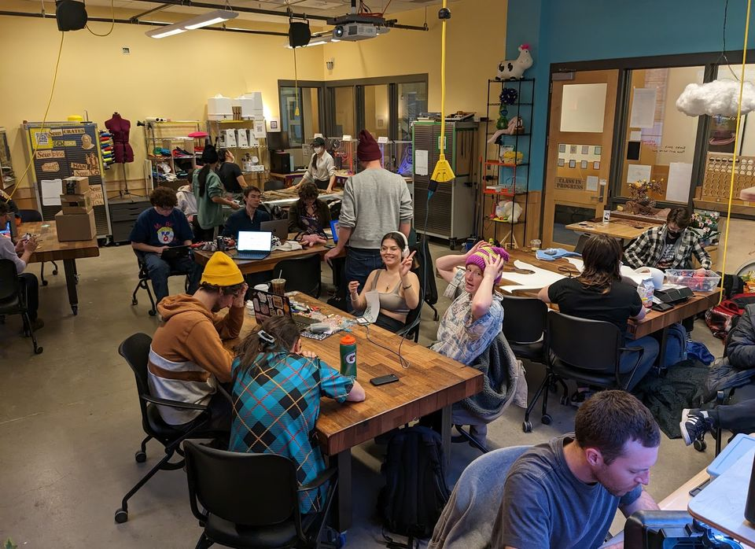
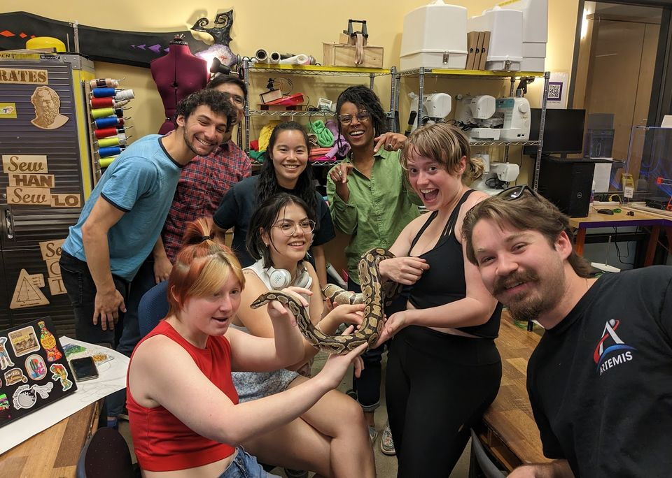
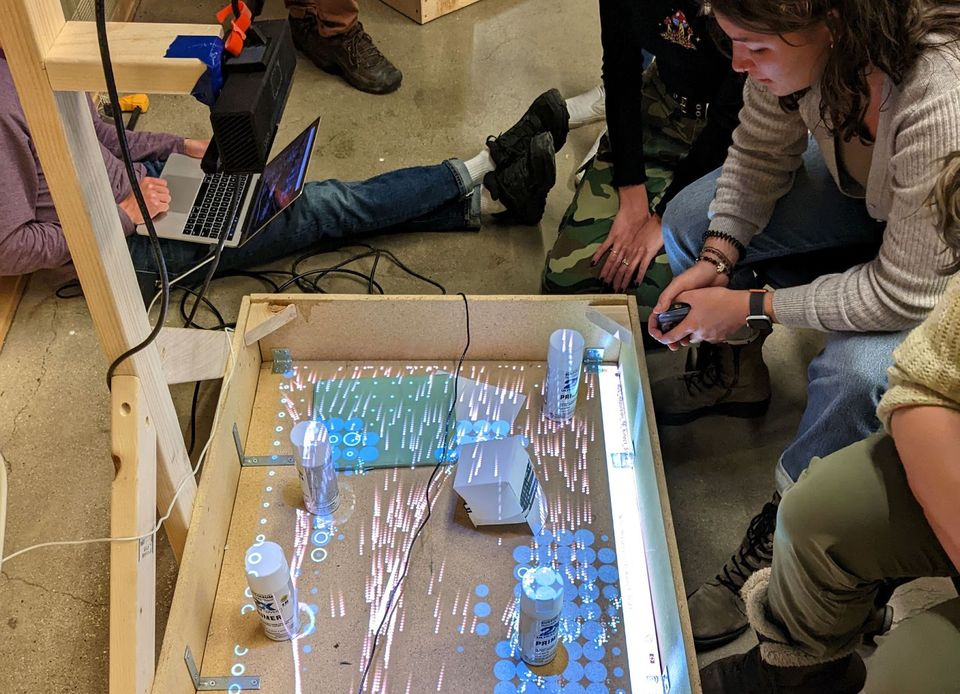

WHO?
Anyone with a BuffOne can gain access to BTU. Our goal is to provide the most diverse, inclusive environment for makers of all types in a highly experimental and productive space.

The ATLAS BTU Lab is an inclusive community makerspace facilitating projects at the intersection of Art, Design, Engineering and Architecture. It serves multiple functions as a general workspace, and workshop host.

Anyone with a BuffOne can gain access to BTU. Our goal is to provide the most diverse, inclusive environment for makers of all types in a highly experimental and productive space.

New members attend a 20 minute general orientation covering community expectations, safety and equipment.
The orientation* schedule, and all scheduled events can be found on the BTU Calendar. [*Some things involve separate orientations...like lasers and stuff. Check the calendar and the pages above for your interests.]
320 UCB
1125 18th St
Boulder, CO 80309

Have any questions? Email BTU Lab at atlasbtulab@gmail.com.